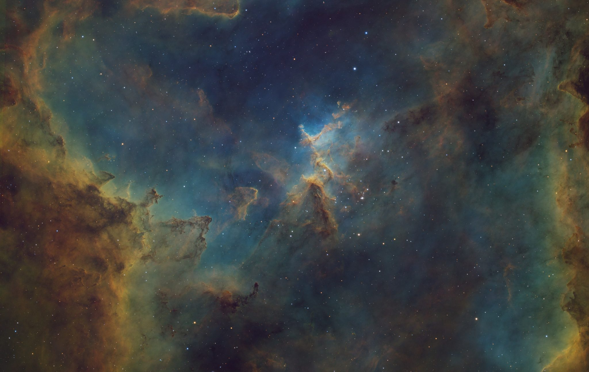
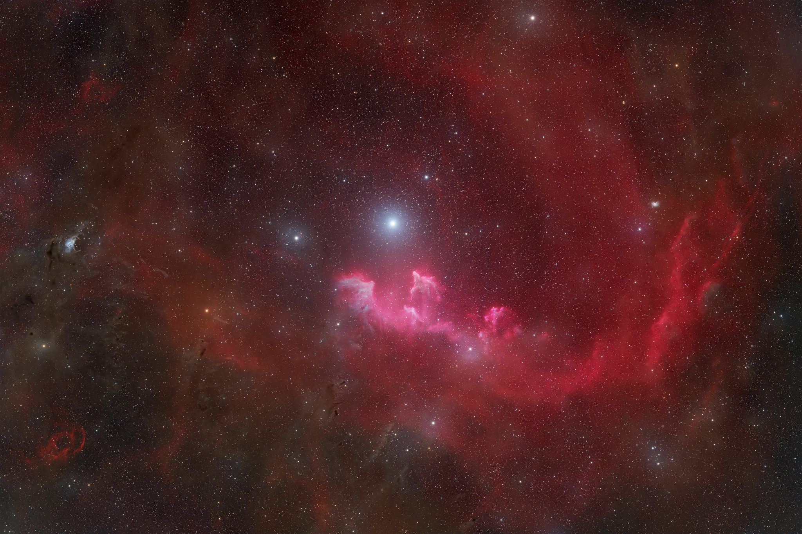
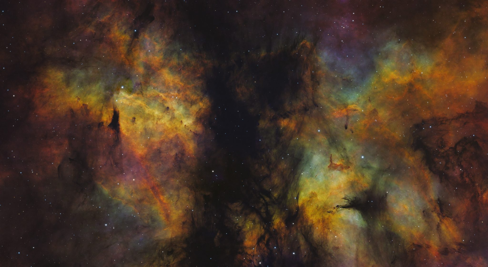

Latest · 01 / 05
LRGB + Hα
IC 63 V2
- Integration
- 50h 41m
- Telescope
- GT81
- Camera
- ASI585MM Pro
- Nights
- 13
Latest · 01 / 05
LRGB + Hα

Featured · 02 / 05
Cassiopeia · SHO

Featured · 03 / 05
vdB 141 · LRGB

Featured · 04 / 05
Cassiopeia · LRGB + Hα

Featured · 05 / 05
SHO
Professional Grade Astronomical Data at your Fingertips
Counted by AstroTracker from the pictures on this site: every sub once, and rejected subs add no time.